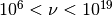

basic concepts¶
work place¶
The first step is to import the package, and to set a work place:
the latter command will set the output directory to ./ and will add a flag TEST to the output products
data format¶
The SED data can be stored in ASCII file in a quite flexible way, but some requirements are needed:
- you must provide at least two columns for frequencies and fluxes
- frequencies are in Hz
- fluxes are in cgs, …..
The header of the file can contain some meta-data that are sourced when the data are loaded. The meta-data available are :
- z : redhsift
- resframe: restframe of the data src or obs
- data_scale: scale of the data lin-lin or log-log
- dataType: structure of the comumns with the SED data
the meaning of these meta-data is explained in detail in BlazarSEDFit.data_loader.ObsData class
documentation. The meta-data can be included in the header with line like:
A typical structure of SED data file, including meta-data declaration is the following:
loading data¶
The most effective way to import the SED data is to create an object
instance of BlazarSEDFit.data_loader.ObsData class
(see the documentation for the data_loader module)
The package provides some test SEDs, accessible as follows:
producing the following output:
['/Users/orion/.local/lib/python2.6/site-packages/BlazarSEDFit/test_data/SEDs_data/SED_MW_Mrk421.dat',
'/Users/orion/.local/lib/python2.6/site-packages/BlazarSEDFit/test_data/SEDs_data/SED_MW_Mrk501.dat']
to load the SED of Mrk 421, the first one in the list:
As you can see the all the meta-data have been properly sourced from the SED file header. You also get information on
the lenght of the data, before and after elimination of duplicated entries, and upper limits
These meta-data are parameters needed by the
BlazarSEDFit.data_loader.ObsData constructor.
plotting data¶
We can now plot our SED using the BlazarSEDFit.plot_sedfit.Plot class
(see the documentation for the plot_sedfit module)
That will produce

grouping data¶
As you can see, due to the overlapping of different instruments and to different time snapshots, some points have multiple values. Although this is not a problem for the fit process, you might want to rebin your data. This can be obtained with the following command:
handling errors and systematics¶
Another important issues when dealing with fitting of data, is the proper handling of errors. Typically one might need to add systematics for different reasons:
- data are not really simultaneous, and you want to add systematics to take this into account
- data (typically IR up to UV), might have very small errors compared to those at higher energies. This might bias the minimizer to accomodate the parameters in order to fit ‘better’ the low frequencies branch.
For these reasons the package offer the possibility to add systematics
with this command we add 10% systematics for data between  Hz